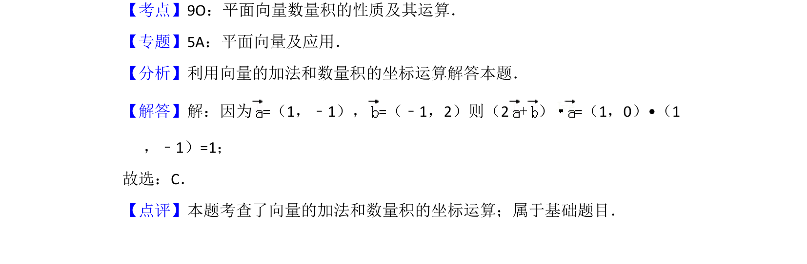

考点：平面向量坐标运算 向量加法 数量积坐标运算
该题考查平面向量的加法和数量积的坐标运算，直接代入公式计算。

📄 原 PDF 第 3 页：
素材/真题/吉林/2008-2024·（吉林）数学高考真题/2015年高考数学试卷（文）（新课标Ⅱ）（解析卷）.pdf
4．（5分）=（1，﹣1），=（﹣1，2）则（2+）=（ ） A．﹣1 B．0 C．1 D．2
【考点】9O：平面向量数量积的性质及其运算．菁优网版权所有 【专题】5A：平面向量及应用． 【分析】利用向量的加法和数量积的坐标运算解答本题． 【解答】解：因为=（1，﹣1），=（﹣1，2）则（2+）=（1，0）•（1 ，﹣1）=1； 故选：C． 【点评】本题考查了向量的加法和数量积的坐标运算；属于基础题目．